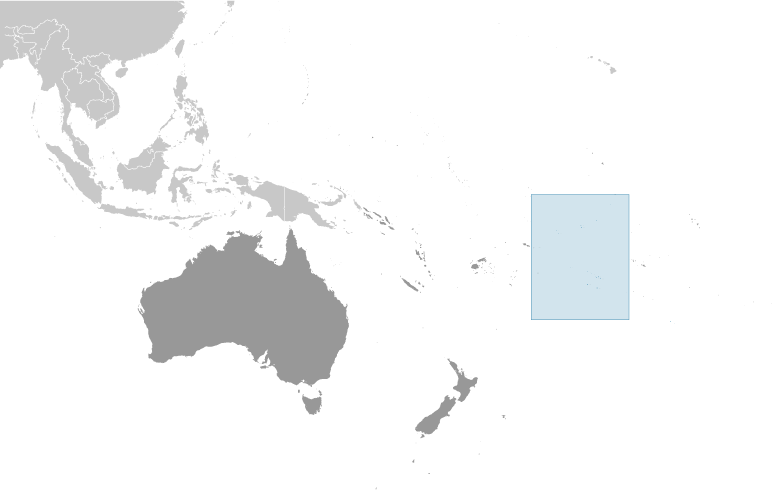
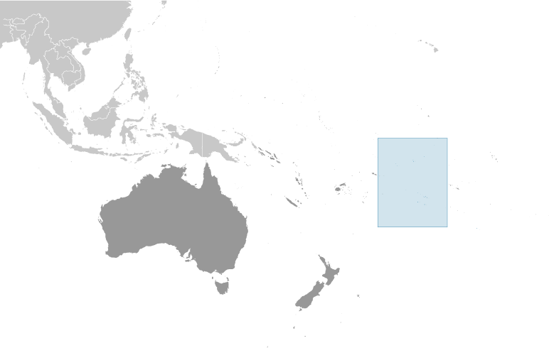

Australia-Oceania :: COOK ISLANDS
Introduction :: COOK ISLANDS
-
Named after Captain COOK, who sighted them in 1770, the islands became a British protectorate in 1888. By 1900, administrative control was transferred to New Zealand; in 1965, residents chose self-government in free association with New Zealand. The emigration of skilled workers to New Zealand, government deficits, and limited natural resources are of continuing concern.
Geography :: COOK ISLANDS
-
Oceania, group of islands in the South Pacific Ocean, about halfway between Hawaii and New Zealand21 14 S, 159 46 WOceaniatotal: 236 sq kmland: 236 sq kmwater: 0 sq kmcountry comparison to the world: 2151.3 times the size of Washington, DC0 km120 kmterritorial sea: 12 nmexclusive economic zone: 200 nmcontinental shelf: 200 nm or to the edge of the continental margintropical oceanic; moderated by trade winds; a dry season from April to November and a more humid season from December to Marchlow coral atolls in north; volcanic, hilly islands in southmean elevation: NAelevation extremes: lowest point: Pacific Ocean 0 mhighest point: Te Manga 652 mcoconuts (copra)agricultural land: 8.4%arable land 4.2%; permanent crops 4.2%; permanent pasture 0%forest: 64.6%other: 27% (2011 est.)NAmost of the population is found on the island of Rarotongatropical cyclones (November to March)limited land presents solid and liquid waste disposal problems; environmental degradation due to unregulated buildingparty to: Biodiversity, Climate Change, Climate Change-Kyoto Protocol, Desertification, Hazardous Wastes, Law of the Sea, Ozone Layer Protectionthe northern Cook Islands are seven low-lying, sparsely populated, coral atolls; the southern Cook Islands, where most of the population lives, consist of eight elevated, fertile, volcanic isles, including the largest, Rarotonga, at 67 sq km
People and Society :: COOK ISLANDS
-
9,290 (July 2017 est.)note: the Cook Islands' Ministry of Finance & Economic Management estimated the resident population to have been 11,700 in September 2016country comparison to the world: 224noun: Cook Islander(s)adjective: Cook IslanderCook Island Maori (Polynesian) 81.3%, part Cook Island Maori 6.7%, other 11.9% (2011 est.)English (official) 86.4%, Cook Islands Maori (Rarotongan) (official) 76.2%, other 8.3%note: shares sum to more than 100% because some respondents gave more than one answer on the census (2011 est.)Protestant 62.8% (Cook Islands Christian Church 49.1%, Seventh Day Adventist 7.9%, Assemblies of God 3.7%, Apostolic Church 2.1%), Roman Catholic 17%, Mormon 4.4%, other 8%, none 5.6%, no response 2.2% (2011 est.)0-14 years: 21.12% (male 1,036/female 926)15-24 years: 16.63% (male 826/female 719)25-54 years: 38.09% (male 1,767/female 1,772)55-64 years: 11.99% (male 603/female 511)65 years and over: 12.16% (male 557/female 573) (2017 est.)total: 36.6 yearsmale: 36 yearsfemale: 37 years (2017 est.)country comparison to the world: 74-2.79% (2017 est.)country comparison to the world: 23514 births/1,000 population (2017 est.)country comparison to the world: 1388.4 deaths/1,000 population (2017 est.)country comparison to the world: 80most of the population is found on the island of Rarotongaurban population: 75% of total population (2017)rate of urbanization: 0.8% annual rate of change (2015-20 est.)at birth: 1.04 male(s)/female0-14 years: 1.12 male(s)/female15-24 years: 1.14 male(s)/female25-54 years: 1 male(s)/female55-64 years: 1.17 male(s)/female65 years and over: 0.97 male(s)/femaletotal population: 1.07 male(s)/female (2016 est.)total: 13 deaths/1,000 live birthsmale: 15.8 deaths/1,000 live birthsfemale: 10.1 deaths/1,000 live births (2017 est.)country comparison to the world: 109total population: 76 yearsmale: 73.2 yearsfemale: 79 years (2017 est.)country comparison to the world: 932.19 children born/woman (2017 est.)country comparison to the world: 983.4% of GDP (2014)country comparison to the world: 1741.19 physicians/1,000 population (2009)improved:urban: 99.9% of populationrural: 99.9% of populationtotal: 99.9% of populationunimproved:urban: 0.1% of populationrural: 0.1% of populationtotal: 0.1% of population (2015 est.)improved:urban: 97.6% of populationrural: 97.6% of populationtotal: 97.6% of populationunimproved:urban: 2.4% of populationrural: 2.4% of populationtotal: 2.4% of population (2015 est.)NANANA55.9% (2016)country comparison to the world: 24% of GDP (2015)country comparison to the world: 137total: 15 yearsmale: 15 yearsfemale: 16 years (2015)
Government :: COOK ISLANDS
-
conventional long form: noneconventional short form: Cook Islandsetymology: named after Captain James COOK, the British explorer who visited the islands in 1773 and 1777self-governing in free association with New Zealand; Cook Islands is fully responsible for internal affairs; New Zealand retains responsibility for external affairs and defense in consultation with the Cook Islandsself-governing parliamentary democracy (Parliament of the Cook Islands) in free association with New Zealandname: Avaruageographic coordinates: 21 12 S, 159 46 Wtime difference: UTC-10 (5 hours behind Washington, DC, during Standard Time)nonenone (became self-governing in free association with New Zealand on 4 August 1965 and has the right at any time to move to full independence by unilateral action)Constitution Day, first Monday in August (1965)4 August 1965 (Cook Islands Constitution Act 1964); amended many times, last in 2004 (2016)common law similar to New Zealand common lawhas not submitted an ICJ jurisdiction declaration (New Zealand normally retains responsibility for external affairs); accepts ICCt jurisdiction18 years of age; universalchief of state: Queen ELIZABETH II (since 6 February 1952); represented by Tom J. MARSTERS (since 9 August 2013); New Zealand High Commissioner Peter MARSHALL (since 10 January 2017)head of government: Prime Minister Henry PUNA (since 30 November 2010)cabinet: Cabinet chosen by the prime ministerelections/appointments: the monarchy is hereditary; UK representative appointed by the monarch; New Zealand high commissioner appointed by the New Zealand Government; following legislative elections, the leader of the majority party or majority coalition usually becomes prime ministerdescription: unicameral Parliament, formerly the Legislative Assembly (24 seats; members directly elected in single-seat constituencies by simple majority vote to serve 4-year terms); note - the House of Ariki, a 24-member parliamentary body of traditional leaders appointed by the Queen's representative serves as a consultative body to the Parliamentelections: last held on 9 July 2014 (next to be held by 2018)election results: percent of vote by party - CIP 46.1%, Demo 42.3%, One Cook Islands 9.6%, other 2.0%; seats by party - CIP 13, Demo 9, One Cook Islands Movement 2highest resident court(s): Court of Appeal (consists of the chief justice and 3 judges of the High Court); High Court (consists of the chief justice and at least 4 judges and organized into civil, criminal, and land divisions); note - appeals beyond the Cook Islands Court of Appeal are heard by the Judicial Committee of the Privy Council (in London)judge selection and term of office: High Court chief justice appointed by the Queen's Representative on the advice of the Executive Council tendered by the prime minister; other judges appointed by the Queen's Representative, on the advice of the Executive Council tendered by the chief justice, High Court chief justice, and the minister of justice; chief justice and judges appointed for 3-year renewable termssubordinate courts: justices of the peaceCook Islands Party or CIP [Henry PUNA]Democratic Party or Demo [William HEATHER]One Cook Islands Movement [Teina BISHOP]Political Reform Conference (lobby for political system changes)other: various political change lobbyist groupsACP, ADB, AOSIS, FAO, ICAO, ICCt, ICRM, IFAD, IFRCS, IMO, IMSO, IOC, ITUC (NGOs), OPCW, PIF, Sparteca, SPC, UNESCO, UPU, WHO, WMOnone (self-governing in free association with New Zealand)none (self-governing in free association with New Zealand)blue with the flag of the UK in the upper hoist-side quadrant and a large circle of 15 white five-pointed stars (one for every island) centered in the outer half of the flaga circle of 15, five-pointed, white stars on a blue field, Tiare maori (Gardenia taitensis) flower; national colors: blue, whitename: "Te Atua Mou E" (To God Almighty)lyrics/music: Tepaeru Te RITO/Thomas DAVISnote: adopted 1982; as prime minister, Sir Thomas DAVIS composed the anthem; his wife, a tribal chief, wrote the lyrics
Economy :: COOK ISLANDS
-
Like many other South Pacific island nations, the Cook Islands' economic development is hindered by the isolation of the country from foreign markets, the limited size of domestic markets, lack of natural resources, periodic devastation from natural disasters, and inadequate infrastructure. Agriculture, employing more than one-quarter of the working population, provides the economic base with major exports of copra and citrus fruit. Black pearls are the Cook Islands' leading export. Manufacturing activities are limited to fruit processing, clothing, and handicrafts. Trade deficits are offset by remittances from emigrants and by foreign aid overwhelmingly from New Zealand. In the 1980s and 1990s, the country became overextended, maintaining a bloated public service and accumulating a large foreign debt. Subsequent reforms, including the sale of state assets, the strengthening of economic management, the encouragement of tourism, and a debt restructuring agreement, have rekindled investment and growth.$244.1 million (2010 est.)$183.2 million (2005 est.)country comparison to the world: 218$244.1 million (2010 est.)0.1% (2005 est.)country comparison to the world: 187$12,300 (2010 est.)$9,100 (2005 est.)country comparison to the world: 122agriculture: 5.1%industry: 12.7%services: 82.1% (2010 est.)copra, citrus, pineapples, tomatoes, beans, pawpaws, bananas, yams, taro, coffee; pigs, poultryfruit processing, tourism, fishing, clothing, handicrafts1% (2002)country comparison to the world: 1446,820 (2001)country comparison to the world: 219agriculture: 29%industry: 15%services: 56% (1995)13.1% (2005)country comparison to the world: 158NA%lowest 10%: NA%highest 10%: NA%revenues: $86.9 millionexpenditures: $77.9 million (2010)35.6% of GDP (2010 est.)country comparison to the world: 553.7% of GDP (2010 est.)country comparison to the world: 101 April - 31 March2.2% (2011 est.)country comparison to the world: 128$38.99 million (31 December 2011 est.)country comparison to the world: 191$148.2 million (31 December 2011 est.)$170.9 million (31 December 2010 est.)country comparison to the world: 193$26.67 million (2005)country comparison to the world: 54$3.125 million (2011 est.)$5.163 million (2010 est.)country comparison to the world: 220copra, papayas, fresh and canned citrus fruit, coffee; fish; pearls and pearl shells; clothing$109.3 million (2011 est.)$90.62 million (2010 est.)country comparison to the world: 215foodstuffs, textiles, fuels, timber, capital goods$141 million (1996 est.)country comparison to the world: 191NZ dollars (NZD) per US dollar -1.4341 (2016 est.)1.4341 (2015 est.)1.441 (2014 est.)1.4279 (2013 est.)1.23 (2012 est.)
Energy :: COOK ISLANDS
-
32 million kWh (2015 est.)country comparison to the world: 21029.76 million kWh (2015 est.)country comparison to the world: 2090 kWh (2016 est.)country comparison to the world: 1270 kWh (2016 est.)country comparison to the world: 14010,000 kW (2015 est.)country comparison to the world: 20880% of total installed capacity (2015 est.)country comparison to the world: 890% of total installed capacity (2015 est.)country comparison to the world: 750% of total installed capacity (2015 est.)country comparison to the world: 17030% of total installed capacity (2015 est.)country comparison to the world: 140 bbl/day (2016 est.)country comparison to the world: 1240 bbl/day (2014 est.)country comparison to the world: 1120 bbl/day (2014 est.)country comparison to the world: 1160 bbl (1 January 2017 es)country comparison to the world: 1240 bbl/day (2014 est.)country comparison to the world: 133530 bbl/day (2015 est.)country comparison to the world: 2100 bbl/day (2014 est.)country comparison to the world: 147528.2 bbl/day (2014 est.)country comparison to the world: 2050 cu m (2013 est.)country comparison to the world: 1250 cu m (2013 est.)country comparison to the world: 1730 cu m (2013 est.)country comparison to the world: 910 cu m (2013 est.)country comparison to the world: 1150 cu m (1 January 2014 es)country comparison to the world: 131200,000 Mt (2013 est.)country comparison to the world: 203
Communications :: COOK ISLANDS
-
total: 7,800subscriptions per 100 inhabitants: 75 (July 2016 est.)country comparison to the world: 202total: 11,000subscriptions per 100 inhabitants: 105 (July 2016 est.)country comparison to the world: 213general assessment: Telecom Cook Islands offers international direct dialing, Internet, email, fax, and Telexdomestic: individual islands are connected by a combination of satellite earth stations, microwave systems, and VHF and HF radiotelephone; within the islands, service is provided by small exchanges connected to subscribers by open-wire, cable, and fiber-optic cableinternational: country code - 682; satellite earth station - 1 Intelsat (Pacific Ocean) (2015)1 privately owned TV station broadcasts from Rarotonga providing a mix of local news and overseas-sourced programs (2016).cktotal: 5,160percent of population: 54.0% (July 2016 est.)country comparison to the world: 216
Transportation :: COOK ISLANDS
-
number of registered air carriers: 1inventory of registered aircraft operated by air carriers: 1 (2015)E5 (2016)11 (2013)country comparison to the world: 153total: 11,524 to 2,437 m: 1 (2017)total: 101,524 to 2,437 m: 2914 to 1,523 m: 7under 914 m: 1 (2013)total: 320 kmpaved: 33 kmunpaved: 287 km (2003)country comparison to the world: 204total: 35by type: bulk carrier 2, cargo 25, passenger 1, refrigerated cargo 6, roll on/roll off 1foreign-owned: 23 (Estonia 1, Germany 1, Lithuania 1, Norway 8, NZ 2, Russia 1, Sweden 3, Turkey 4, UK 2) (2010)country comparison to the world: 82major seaport(s): Avatiu
Military and Security :: COOK ISLANDS
-
no regular military forces; National Police Departmentdefense is the responsibility of New Zealand in consultation with the Cook Islands and at its request
Transnational Issues :: COOK ISLANDS
-
none